Assignment 2 asks you to do the following things:
- get means on outcome variables for 8 groups
- Using SPSS or Excel or R, graphically display them on a well-labeled barchart
The first thing that you need to do is to decide on your variables and these fall into two groups:
- Outcome variables
- Variables defining groups.
Because Prof. Battle asked you to get the means, the outcome variables must be appropriate for calculating a mean. That means that they should be numeric also known as interval. However, it is sometimes okay to treat ordinal variables as though they are numbers.
You need to pick 2 outcome variables that are ordinal or interval.
By groups, the assignment means people who have two different characterstics in common.
So, for example, it could mean “women who are over 70”, which combines gender and age to create a group. Or “Black people who live in the south.”
This assignment will make the most sense and be most useful if you pick variables that you are at least somewhat interested in!
Also if you think about comparing groups you can create your 8 groups that will allow you to make useful comparisons.
Make a list of your outcome variables here
For the examples we’ll use rss1$SUN_CLOUDY and
rss1$SUN_NOHARM.
Make a list of your groups here
What are the variable names of the variables you will be using?
In creating grouping, you can decide to pair up some combinations so that they differ in just one way.
For the groups in the example we’ll use:
Males over 70 (P_GENDER, P_AGEC_R)
Females over 70 (P_GENDER, P_AGEC_R)
Language used with doctor is Spanish and are Hispanic (P_RACE_R, LAN_DOCTOR)
Language used with doctor is English and are Hispanic (P_RACE_R, LAN_DOCTOR)
Language used with doctor is Spanish and Male (P_GENDER, LAN_DOCTOR)
Language used with doctor is Spanish and Female (P_GENDER, LAN_DOCTOR)
People live in metropolitan areas and who live in the South who (P_REGION & PMETRO_R).
People who live in metropolitan areas and who live in the Northeast (P_REGION & PMETRO_R).
Notice that this means that we are excluding certain groups.
For example: * people who are under 70
* people who are not Hispanic
* people who don’t use Spanish with their doctors * people who live in
the Midwest and West and who no not live in metropolitan areas
(cities).
First let’s look at the dependent variables.
data_tabulate(c(rss1$SUN_NOHARM))c(rss1$SUN_NOHARM) <categorical>
# total N=7599 valid N=7510
Value | N | Raw % | Valid % | Cumulative %
------------------+------+-------+---------+-------------
Strongly disagree | 4295 | 56.52 | 57.19 | 57.19
Somewhat disagree | 2000 | 26.32 | 26.63 | 83.82
Somewhat agree | 756 | 9.95 | 10.07 | 93.89
Strongly agree | 459 | 6.04 | 6.11 | 100.00
<NA> | 89 | 1.17 | <NA> | <NA>
data_tabulate(c(rss1$SUN_CLOUDY))c(rss1$SUN_CLOUDY) <categorical>
# total N=7599 valid N=7489
Value | N | Raw % | Valid % | Cumulative %
------------------+------+-------+---------+-------------
Strongly disagree | 2955 | 38.89 | 39.46 | 39.46
Somewhat disagree | 2823 | 37.15 | 37.70 | 77.15
Somewhat agree | 1254 | 16.50 | 16.74 | 93.90
Strongly agree | 457 | 6.01 | 6.10 | 100.00
<NA> | 110 | 1.45 | <NA> | <NA>First, let’s do a little trick to make the two variables numeric because if we don’t calculating the mean can’t work!
distribution_mean(rss1$SUN_NOHARM)Warning in mean.default(x, na.rm = remove_na): argument is not numeric or
logical: returning NA[1] NA
distribution_mean(rss1$SUN_CLOUDY)Warning in mean.default(x, na.rm = remove_na): argument is not numeric or
logical: returning NA[1] NA
distribution_mean(rss1$SUN_NOHARM, convert_to_numeric = TRUE)[1] 1.650999
distribution_mean(rss1$SUN_CLOUDY, convert_to_numeric = TRUE)[1] 1.894913Since we are going to calculate a lot of means, it makes sense to make a change by creating temporary numeric versions of the variables.
rss1$SUN_CLOUDY_N <- to_numeric(rss1$SUN_CLOUDY)
rss1$SUN_NOHARM_N <- to_numeric(rss1$SUN_NOHARM)Overall means
distribution_mean(rss1$SUN_NOHARM_N)[1] 1.650999
distribution_mean(rss1$SUN_CLOUDY_N)[1] 1.894913Groups 1 and 2
Males over 70 and Females over 70
Idea: Older women will be more aware of the health issues of sunburn than older men.
Reason: Women are general more aware of health issues than men.
Step 1
Subset the data to get our groups in two separate data sets.
data_filter(rss1, P_GENDER == "Male" &
P_AGEC_R == "70+") -> temp1m
data_filter(rss1, P_GENDER == "Female" &
P_AGEC_R == "70+") -> temp1f Step 2: Get the Means
distribution_mean(temp1m$SUN_CLOUDY_N)[1] 1.827141
distribution_mean(temp1f$SUN_CLOUDY_N)[1] 1.625185Males over 70 have a higher score in terms of ageeing with the statement that “On cloudy days you don’t need to worry about sun” than women over 70.
Step 3 make the charts
distribution_bar(temp1f$SUN_CLOUDY,
title =
"Cloudy days don’t need to worry about sun (females)")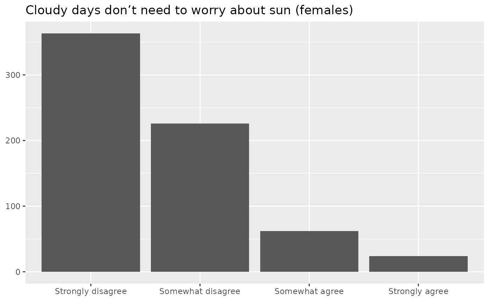
distribution_bar(temp1m$SUN_CLOUDY,
title =
"Cloudy days don’t need to worry about sun (males)")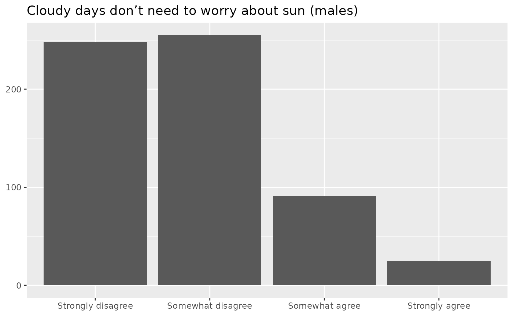
The bar charts show that few people over 70 of either gender strongly or somewhat agree with the statement. Women were more likely to strongly disagree than to somewhat disagree. However, men were more evenly divided, with slightly more saying they “somewhat agree” than saying they “strongly agree.”
Repeat for SUN_NOHARM
We are using the same subsamples so we don’t need to subset again.
We can put all of the code in one code chunk.
distribution_mean(temp1m$SUN_NOHARM_N)[1] 1.626214
distribution_mean(temp1f$SUN_NOHARM_N)[1] 1.480176
distribution_bar(temp1f$SUN_NOHARM,
title =
"Sunburn is not harmful in long run (females)")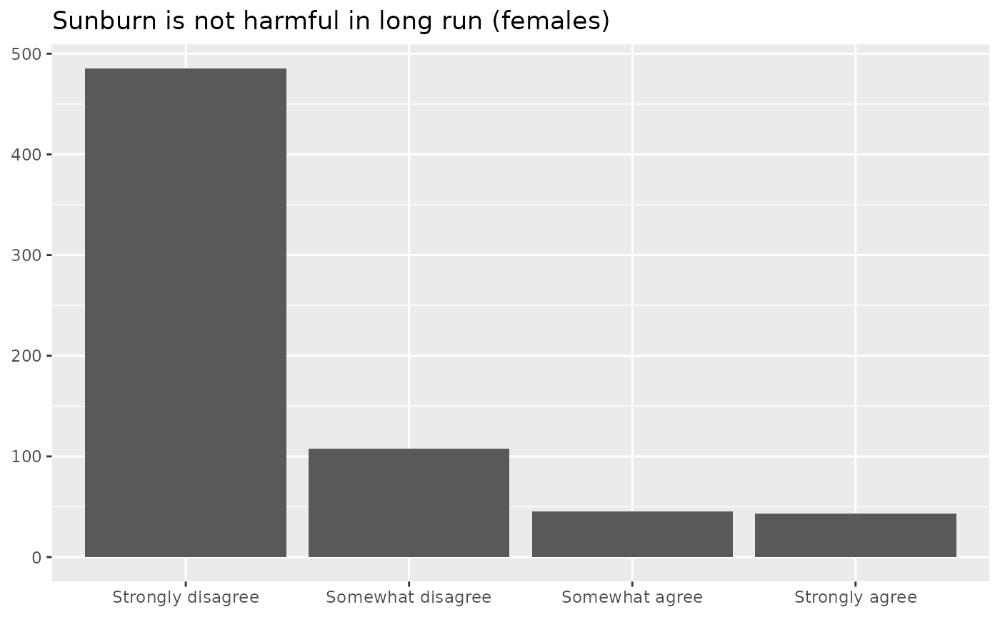
distribution_bar(temp1m$SUN_NOHARM,
title =
"Sunburn is not harmful in long run (males)")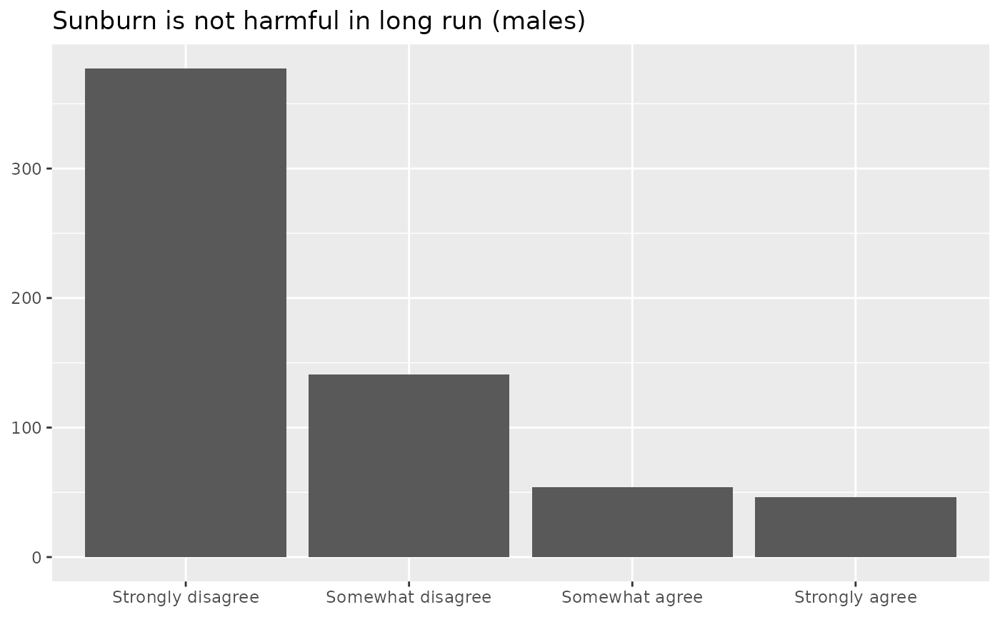
Males over 70 have higher mean disagreement with the statement that “sunburn is not harmful in long run” than females over 70. Overall, women over 70 are more likely to Strongly disagree with the statement than men over 70.
Comparison 2
Hispanics who talk to their doctors in Spanish and Hispanics who talk to their doctors in English
Idea: In the U.S. communicating with the your doctor in a language besides English will be associated with being less concerned with sunburn.
Reason: The doctors may be less fluent in Spanish or language barriers might make them less likely to give information on topics like sunburn.
Filter data
data_filter(rss1, P_RACE_R == "Hispanic" &
LAN_DOCTOR == "Spanish") -> temp2s
data_filter(rss1, P_RACE_R == "Hispanic" &
LAN_DOCTOR == "English") -> temp2e Get means and charts SUN_CLOUDY
distribution_mean(temp2e$SUN_CLOUDY_N)[1] 2
distribution_mean(temp2s$SUN_CLOUDY_N)[1] 2.227273
distribution_bar(temp2e$SUN_CLOUDY,
title =
"Cloudy days don’t need to worry about sun (English)")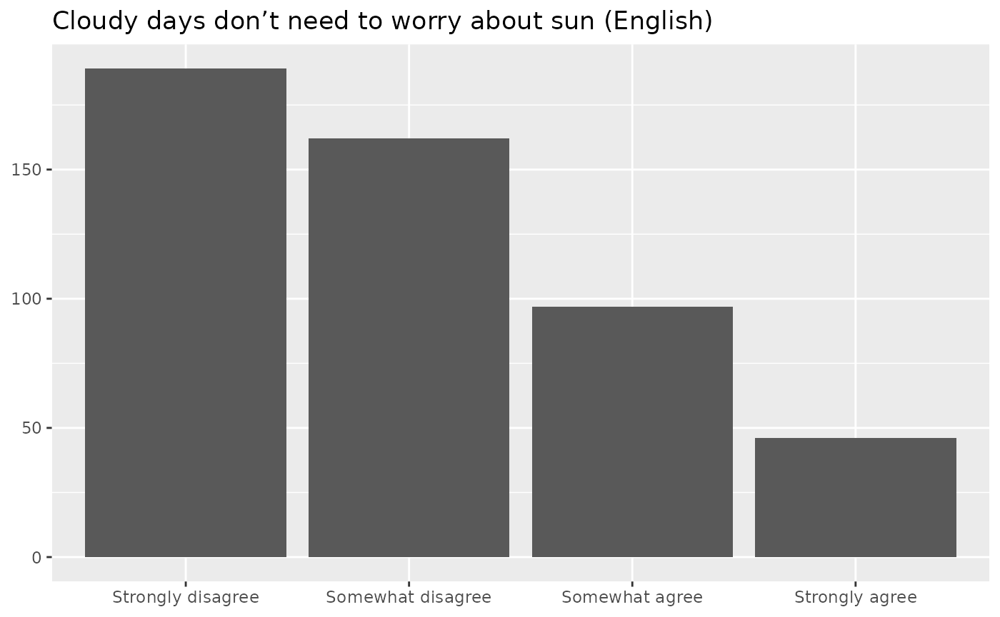
distribution_bar(temp2s$SUN_CLOUDY,
title =
"Cloudy days don’t need to worry about sun (Spanish)")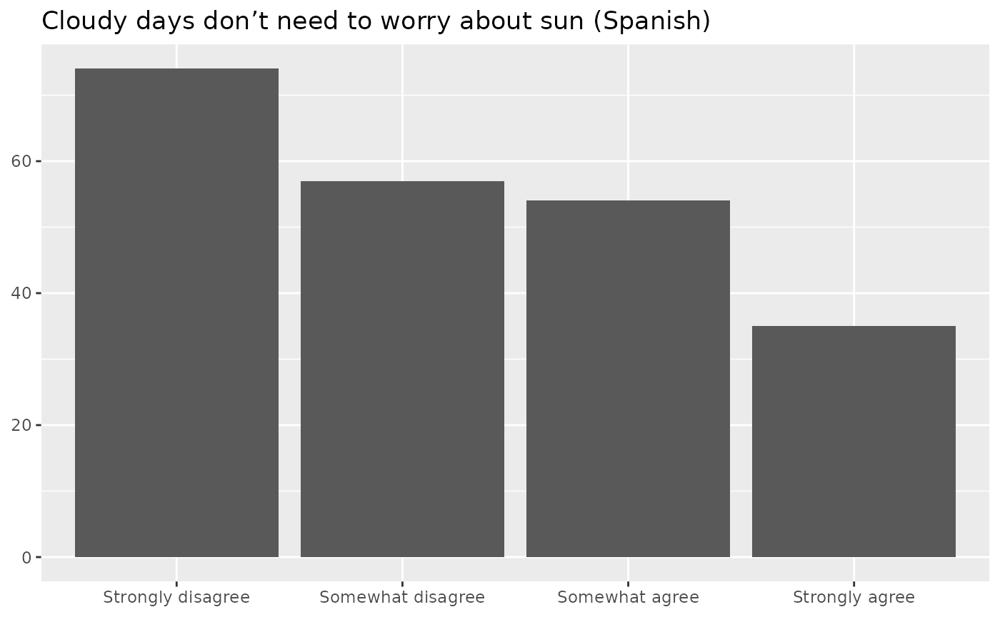
Get means and charts SUN_NOHARM
distribution_mean(temp2e$SUN_NOHARM_N)[1] 1.678138
distribution_mean(temp2s$SUN_NOHARM_N)[1] 1.928251
distribution_bar(temp2e$SUN_NOHARM,
title =
"Sunburn is not harmful in long run (females)")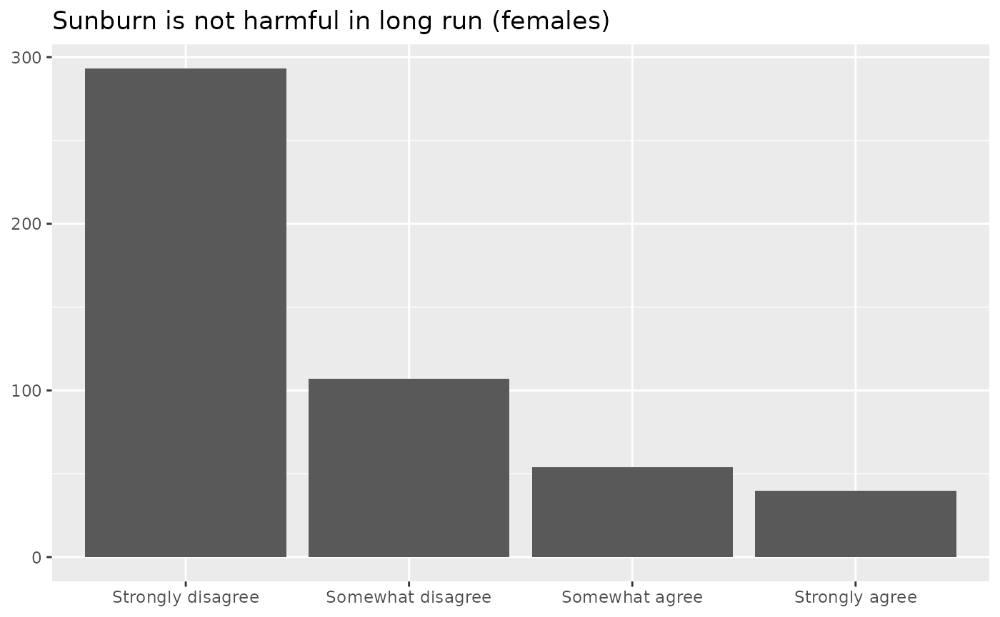
distribution_bar(temp2s$SUN_NOHARM,
title =
"Sunburn is not harmful in long run (males)")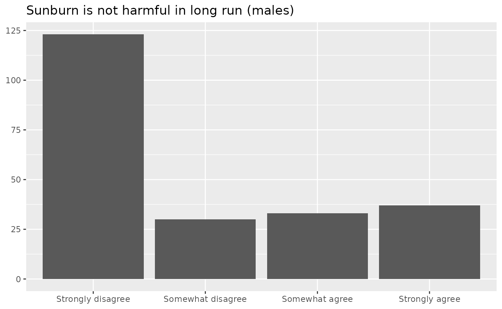
Comparison 3
Idea: Hispanic women will be more concerned about sunburn than Hispanic men.
Reason: In general women have more health informaiton than men. Hispanic people should follow the same pattern.
Filter data
data_filter(rss1, P_RACE_R == "Hispanic" &
P_GENDER == "Male") -> temp3m
data_filter(rss1, P_RACE_R == "Hispanic" &
P_GENDER == "Female") -> temp3f Get means and charts SUN_CLOUDY
distribution_mean(temp3m$SUN_CLOUDY_N)[1] 2.145009
distribution_mean(temp3f$SUN_CLOUDY_N)[1] 1.914336
distribution_bar(temp3m$SUN_CLOUDY,
title =
"Cloudy days don’t need to worry about sun (Males)")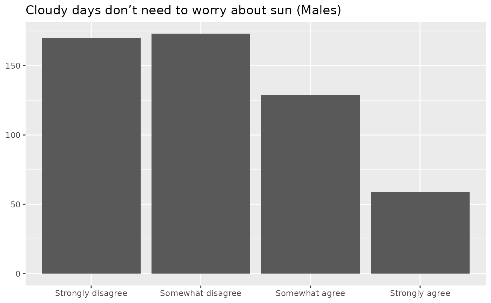
distribution_bar(temp3f$SUN_CLOUDY,
title =
"Cloudy days don’t need to worry about sun (Females)")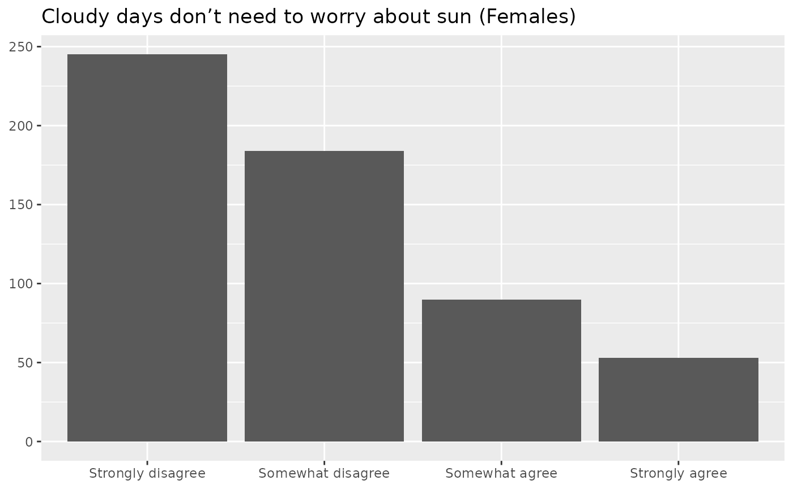
Get means and charts SUN_NOHARM
distribution_mean(temp3f$SUN_NOHARM_N)[1] 1.702609
distribution_mean(temp3m$SUN_NOHARM_N)[1] 1.801126
distribution_bar(temp3f$SUN_NOHARM,
title =
"Sunburn is not harmful in long run (females)")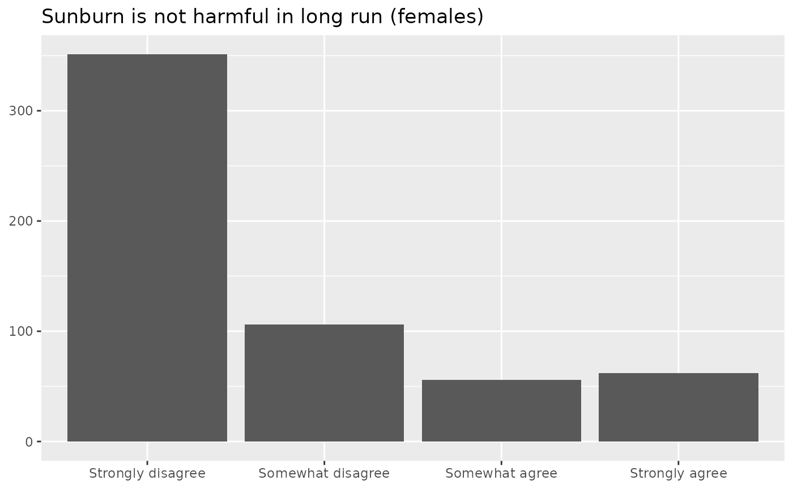
distribution_bar(temp3m$SUN_NOHARM,
title =
"Sunburn is not harmful in long run (males)")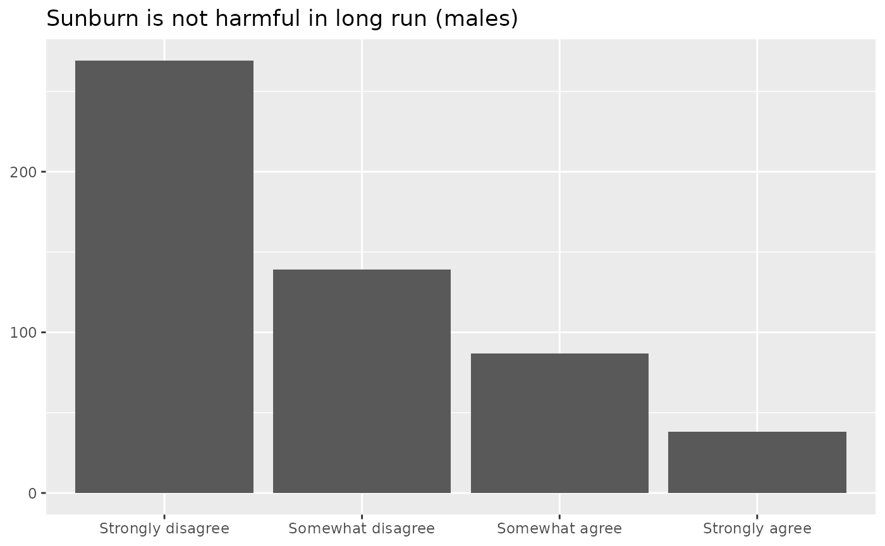
### Overall conclusionComparison 4
(P_REGION & PMETRO_R)
Idea: People in the south who live in metropolitian areas will be more aware of the risks of sunburn.
Reason: The further south people are, the more they are exposed to sun because it is warmer.
Filter data
data_filter(rss1, P_METRO_R == "Metropolitan" &
P_REGION == "Northeast") -> temp4n
data_filter(rss1, P_METRO_R == "Metropolitan" &
P_REGION == "South") -> temp4s Get means and charts SUN_CLOUDY
distribution_mean(temp4n$SUN_CLOUDY_N)[1] 1.931961
distribution_mean(temp4s$SUN_CLOUDY_N)[1] 1.910908
distribution_bar(temp4n$SUN_CLOUDY,
title =
"Cloudy days don’t need to worry about sun (North)")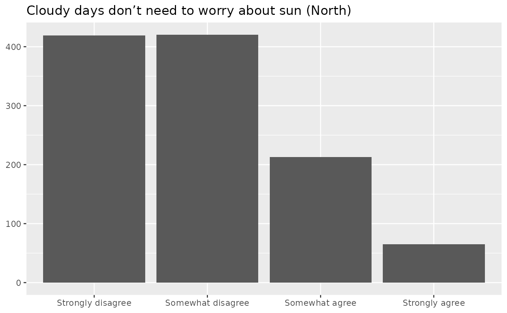
distribution_bar(temp4s$SUN_CLOUDY,
title =
"Cloudy days don’t need to worry about sun (South)")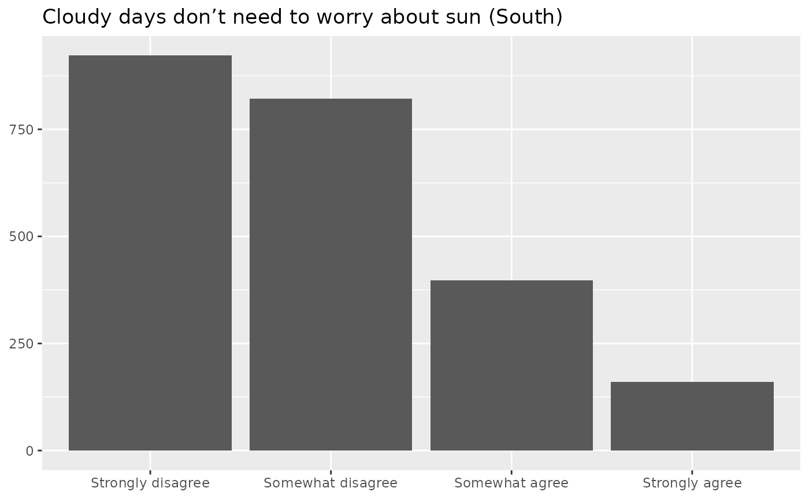
Get means and charts SUN_NOHARM
distribution_mean(temp4n$SUN_NOHARM_N)[1] 1.621766
distribution_mean(temp4s$SUN_NOHARM_N)[1] 1.657576
distribution_bar(temp4n$SUN_NOHARM,
title =
"Sunburn is not harmful in long run (North)")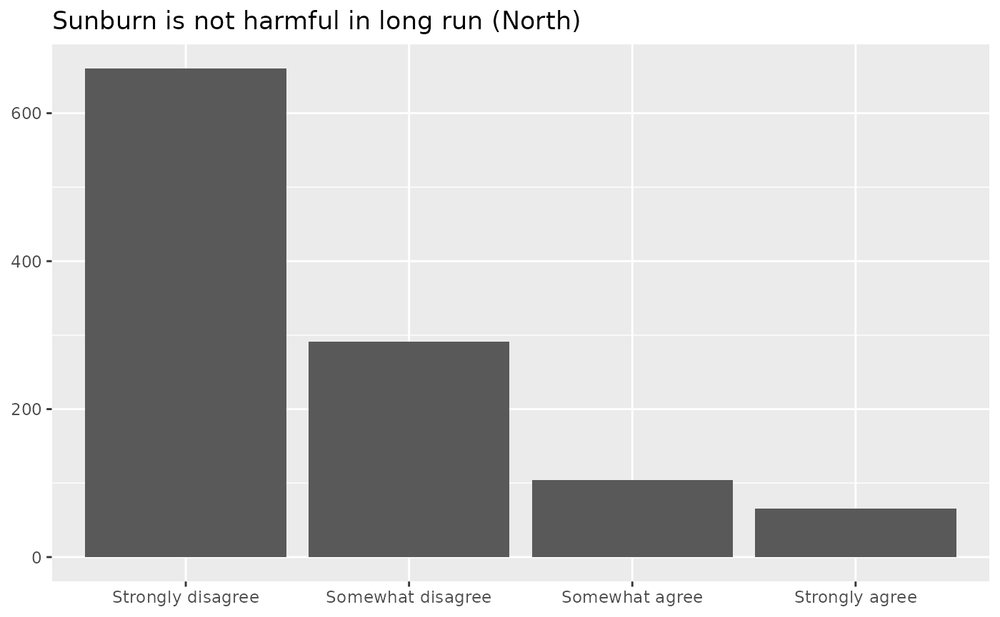
distribution_bar(temp4s$SUN_NOHARM,
title =
"Sunburn is not harmful in long run (South)")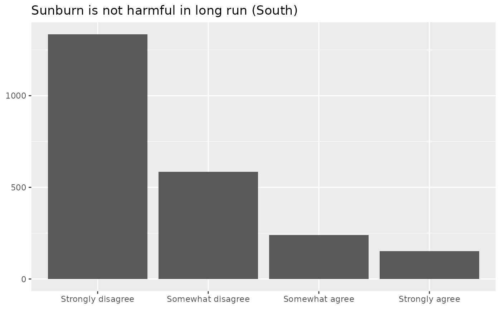
### Overall conclusionOverall, among those living in metropolitan areas (cities) there are only small differences between those living in the northeast and south regions.
Discussion
Was this repetitive and easy to make a mistake with a lot of copy and pasting?
Definitely. Although it is a good introduction to how to think about making comparisons and choosing subgroups.
Are there more efficient ways to do the actual calculations and make
the graphs?
Yes.
Next week we will look at some more efficient approaches.
Bonus example
pfemalenoharm <- distribution_bar(temp1f$SUN_NOHARM,
title =
"Females") +
theme(axis.text.x = element_text(angle = 90))
pmalenoharm <- distribution_bar(temp1m$SUN_NOHARM,
title =
"Males)") +
theme(axis.text.x = element_text(angle = 90))
pfemalecloudy <- distribution_bar(temp1f$SUN_CLOUDY,
title =
"Cloudy (females)") +
theme(axis.text.x = element_text(angle = 90))
pmalecloudy <- distribution_bar(temp1m$SUN_CLOUDY,
title =
"Cloudy (males)") +
theme(axis.text.x = element_text(angle = 90))
plots(pfemalenoharm, pmalenoharm,
pfemalecloudy, pmalecloudy,
n_columns = 2,
title = "Responses to sunburn questions",
subtitle = "People over 70") 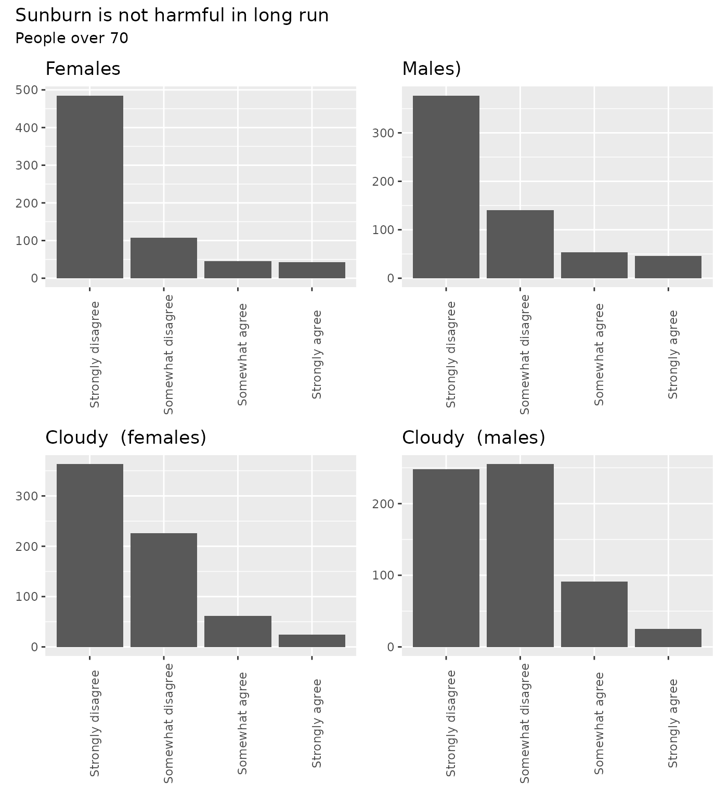
# Put the two data sets together
rbind(temp1m, temp1f) |>
# group the data by gender
data_group(P_GENDER) |>
#calculate all of the statistics
data_summary(
Mean_Cloudy = distribution_mean(SUN_CLOUDY_N),
Median_Cloudy = distribution_median(SUN_CLOUDY_N),
Mean_No_Harm = distribution_mean(SUN_NOHARM_N),
Median_No_Harm = distribution_median(SUN_NOHARM_N)
) |>
display()| P_GENDER | Mean_Cloudy | Median_Cloudy | Mean_No_Harm | Median_No_Harm |
|---|---|---|---|---|
| Male | 1.83 | 2 | 1.63 | 1 |
| Female | 1.63 | 1 | 1.48 | 1 |